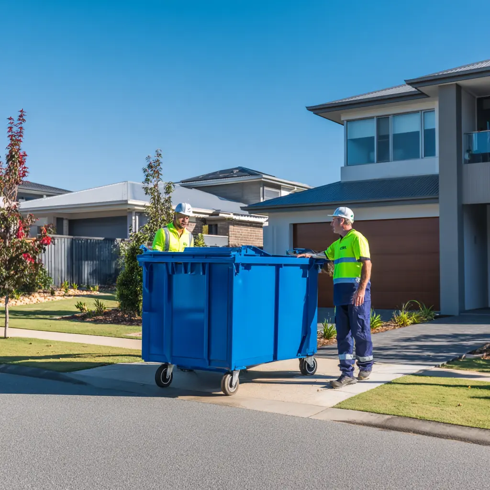
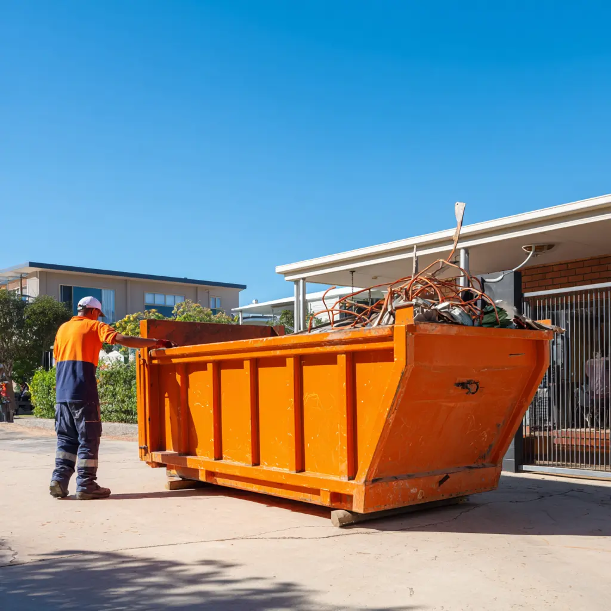

Request A Quote For Skip Bins Rockhampton
If you are looking for skip bins for hire Rockhampton, our team can help you organise the right solution for your project. Skip bin pricing can vary depending on the waste type, bin size, hire period, and delivery location. By providing a few details about your cleanup, renovation, landscaping work, or construction project, we can help recommend a suitable option and provide information about the cheapest skip bin hire rockhampton services available in your area. We focus on transparency so you know exactly what you are paying for when securing the cheapest skip bins rockhampton for your specific site needs.
How Much Are Skip Bins Rockhampton?
Many customers ask how much are skip bins Rockhampton for household, commercial, and construction projects. The answer usually depends on the amount of waste being removed, the type of materials involved, and the skip bin size required. Smaller bins for garden waste or light household rubbish are often the most economical choice. Conversely, larger bins used for renovation debris or building materials require greater disposal capacity. We help customers compare available options to find a practical solution that matches both their project needs and their budget, consistently delivering the cheapest skip bins rockhampton to our community.
Choosing The Right Skip Bin Size in Rockhampton
Choosing the correct skip bin size is one of the most important parts of any waste removal project. Customers looking for skip bins Rockhampton often underestimate how much rubbish a renovation, cleanup, landscaping project, or property cleanout can generate. We help customers assess their waste volume, waste type, and available site access before booking. Whether you need the cheapest skip bins rockhampton for a small household cleanup or a larger bin for construction waste, our team can recommend a suitable option that helps avoid overfilling, unnecessary costs, and additional collections. Getting the size right is a critical step in accessing the cheapest skip bin hire rockhampton options.
Skip Bin Sizes Available
We provide skip bins ranging from 2m³ through to 12m³ for residential, commercial, and construction projects throughout the region. Smaller bins are commonly used for green waste, household rubbish, and garage cleanups, while larger bins are often selected for renovations, shop fit-outs, commercial waste, and building debris. Customers searching for the cheapest skip bin hire rockhampton frequently benefit from choosing the correct size from the beginning rather than paying for additional collections later. Our local expertise ensures that even if you have a massive amount of debris, you are still getting the cheapest skip bins rockhampton relative to the volume of your waste.
Areas We Service
We provide skip bins Rockhampton services throughout the city and many surrounding communities. Our service area includes residential suburbs, commercial districts, industrial areas, and nearby regional locations. Whether you need skip bins for hire Rockhampton for a household cleanup, landscaping project, rental property cleanout, renovation, or commercial waste removal, we help customers across the region organise practical waste management solutions with reliable delivery and collection. We are proud to extend the availability of the cheapest skip bins rockhampton to both city-center residents and those located in the outer suburbs.
Contact Our Team
If you need information about skip bins Rockhampton, the fastest and easiest way to get started is by calling our team directly. You can also submit an enquiry through the form on this page if you prefer. Providing details such as your location, waste type, estimated volume, and project timeframe allows us to recommend a suitable skip bin solution more accurately. Whether you are comparing providers to find the cheapest skip bin hire rockhampton options or organising a larger commercial project, we are happy to assist with booking information, skip bin recommendations, and general enquiries. We look forward to helping you secure the cheapest skip bins rockhampton today.

Frequently Asked Questions
How much are skip bins Rockhampton?
Skip bin pricing depends on several factors including bin size, waste type, hire duration, disposal requirements, and delivery location. Smaller bins used for green waste or light household rubbish are often more affordable, while larger bins used for renovation and construction waste generally cost more. We help customers compare available options to find a practical solution that suits both their project and budget, ensuring you receive the cheapest skip bins rockhampton available for your specific disposal needs.
Do you provide the cheapest skip bins rockhampton?
We help customers find practical and cost-effective waste removal solutions based on their specific project requirements. The most affordable option is often the skip bin size and waste category that best matches the actual job, rather than simply choosing the smallest available bin. By tailoring the service to your needs, we provide a superior value that many of our clients describe as the cheapest skip bin hire rockhampton service in the region.
How do I choose the right skip bin size?
The best skip bin size depends on the amount of waste, the type of rubbish, and the scope of your project. Instead of guessing, simply tell us about your cleanup, renovation, landscaping work, or construction project and we can help recommend a suitable skip bin size based on your requirements. Our goal is to make sure your project remains affordable, which is why we emphasize selecting the correct size to keep your costs down to the cheapest skip bins rockhampton levels.